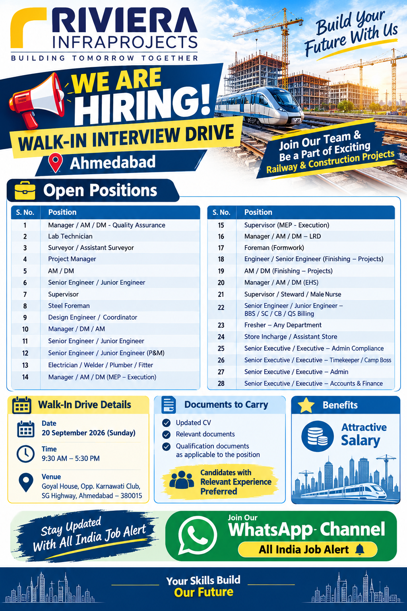

Date: 20 September 2026 (Sunday)
Time: 9:30 AM – 5:30 PM
Venue: Goyal House, Opp. Karnawati Club, SG Highway, Ahmedabad – 380015
Rivera Infra Projects Recruitment 2026
Rivera Infra Projects has announced multiple open positions for candidates looking for opportunities in infrastructure, construction, engineering, project execution, quality, safety, MEP, stores, administration, accounts and finance. The recruitment information includes a broad range of positions suitable for experienced professionals as well as candidates looking for project-based career opportunities.
The company is conducting a walk-in interview drive in Ahmedabad on Sunday, 20 September 2026. The interview timing is from 9:30 AM to 5:30 PM and the venue is Goyal House, Opp. Karnawati Club, SG Highway, Ahmedabad – 380015. Candidates interested in the advertised positions should carefully review the role list and attend the interview with an updated CV and relevant documents.
The available positions cover several departments of construction and infrastructure projects. These include quality assurance, laboratory work, surveying, project management, engineering, supervision, steel and formwork activities, design coordination, plant and machinery, electrical work, welding, plumbing, fitting, MEP execution, finishing, EHS, stores, quantity surveying, billing, administration, timekeeping, camp management and accounts and finance.
Candidates should select positions according to their actual qualifications, technical background and previous experience. Professionals applying for senior engineering or management positions should be prepared to discuss their project responsibilities, team coordination, planning, execution, reporting and technical knowledge during the interview. Candidates applying for skilled trade positions should be prepared to explain their practical experience and previous site responsibilities.
Open Positions
1. Manager / AM / DM – Quality Assurance
This position relates to quality assurance activities within project operations. Candidates with relevant quality and construction project experience can consider this opportunity.
2. Lab Technician
The Lab Technician position is related to project laboratory and testing activities. Relevant technical and laboratory experience may be useful for this role.
3. Surveyor / Assistant Surveyor
Surveying professionals can consider this position for site measurement, survey support and project-related surveying activities.
4. Project Manager
The Project Manager role involves project-level coordination, execution and management responsibilities. Candidates should have relevant project management experience.
5. AM / DM
Assistant Manager and Deputy Manager level opportunities are available for suitable project professionals.
6. Senior Engineer / Junior Engineer
Engineering positions are available for candidates with suitable technical qualifications and project experience.
7. Supervisor
The Supervisor role is suitable for candidates experienced in site supervision, workforce coordination and daily project activities.
8. Steel Foreman
The Steel Foreman position is related to steel and reinforcement work supervision at project sites.
9. Design Engineer / Coordinator
Design and coordination professionals can apply for this position according to their experience and technical background.
10. Manager / DM / AM
Management-level opportunities are available for experienced candidates suitable for the listed project functions.
11. Senior Engineer / Junior Engineer
Additional engineering opportunities are available for suitable candidates with relevant construction or infrastructure experience.
12. Senior Engineer / Junior Engineer (P&M)
This position relates to plant and machinery activities and project engineering support.
13. Electrician / Welder / Plumber / Fitter
Skilled technical professionals can consider the listed electrician, welder, plumber and fitter opportunities based on their practical experience.
14. Manager / AM / DM (MEP – Execution)
MEP execution management positions are available for professionals experienced in project execution and MEP coordination.
15. Supervisor (MEP – Execution)
The MEP Supervisor role involves supervision and coordination of MEP execution activities.
16. Manager / AM / DM – LRD
Management opportunities are available under the listed LRD function for suitable experienced candidates.
17. Foreman (Formwork)
Formwork professionals and experienced foremen can consider this opportunity for project site activities.
18. Engineer / Senior Engineer (Finishing – Projects)
This position is related to finishing activities in construction projects. Candidates with relevant finishing experience can apply.
19. AM / DM (Finishing – Projects)
Management-level finishing project positions are included in the recruitment drive.
20. Manager / AM / DM (EHS)
EHS professionals can consider the listed management opportunities relating to Environment, Health and Safety activities.
21. Supervisor / Steward / Male Nurse
These positions relate to project-site support, supervision, welfare and related site facilities.
22. Senior Engineer / Junior Engineer – BBS / SC / CB / QS Billing
Engineering, quantity surveying and billing-related professionals can consider this opportunity according to their experience.
23. Fresher – Any Department
The recruitment information also lists an opportunity for freshers in suitable departments.
24. Store Incharge / Assistant Store
Store professionals can consider this position for material handling, inventory and project-store related activities.
25. Senior Executive / Executive – Admin Compliance
Administration and compliance professionals can consider this opportunity according to their experience.
26. Senior Executive / Executive – Timekeeper / Camp Boss
This position covers timekeeping and camp administration responsibilities at project locations.
27. Senior Executive / Executive – Admin
Administrative professionals can consider this role for project administration and coordination activities.
28. Senior Executive / Executive – Accounts & Finance
Candidates with accounts and finance experience can consider the listed opportunity for project-related financial and documentation activities.
Documents to Carry
Candidates attending the walk-in interview should carry an updated CV or resume. Relevant documents should also be kept ready for verification. Qualification documents should be carried according to the position being applied for. Experienced candidates may also keep experience certificates, previous employment documents and other relevant professional records available.
- Updated CV / Resume
- Relevant qualification documents
- Experience certificates, if available
- Government-issued identity proof
- Other relevant documents applicable to the position
Who Can Apply?
Candidates from engineering, construction, infrastructure, project execution, quality control, quality assurance, MEP, EHS, stores, surveying, quantity surveying, billing, administration, accounts and skilled trades can review the vacancies. The recruitment list contains positions ranging from fresher-level opportunities to senior and management-level roles.
Applicants should apply only for positions that match their qualifications and experience. Candidates for senior positions should be ready to explain their previous projects, responsibilities, technical knowledge, team management experience and role-specific skills. Skilled workers should be able to explain their practical site experience and previous work responsibilities.
Walk-In Interview Location
The interview will be conducted at Goyal House, Opp. Karnawati Club, SG Highway, Ahmedabad – 380015. Candidates should plan their travel in advance and reach the venue during the interview timing. The scheduled date is Sunday, 20 September 2026, and the interview timing is 9:30 AM to 5:30 PM.
Candidates are advised to check the complete vacancy information before attending. Recruitment decisions, job responsibilities, salary and employment terms are subject to the employer's selection process and applicable conditions.
Benefits
The recruitment information highlights attractive salary as a benefit. Candidates selected for suitable positions may have the opportunity to work in infrastructure and construction project environments and gain exposure to different project functions. Career growth can depend on the position, project requirements, candidate performance, experience and the employer's employment terms.
How to Apply
Mode of Application: Walk-In Interview
Date: 20 September 2026 (Sunday)
Time: 9:30 AM – 5:30 PM
Venue: Goyal House, Opp. Karnawati Club, SG Highway, Ahmedabad – 380015
Carry: Updated CV, relevant documents and qualification documents applicable to the position.
Candidates interested in these openings should attend the walk-in interview at the above-mentioned venue and timing with their updated resume and relevant documents.
Join All India Job Alert WhatsApp Channel
For more job updates, construction vacancies, engineering recruitment, walk-in interviews, supervisor jobs, site jobs, MEP jobs, QA/QC jobs and other career opportunities, join the All India Job Alert WhatsApp channel.
This job post is published for informational purposes based on the recruitment information provided. Candidates should verify the interview details, job responsibilities, employment conditions and selection process before proceeding. Do not pay money to any person for a job opportunity unless there is a clearly documented and legitimate employer process.
Candidates should keep their personal documents secure and share them only through appropriate recruitment channels. Selection is subject to the employer's recruitment process.